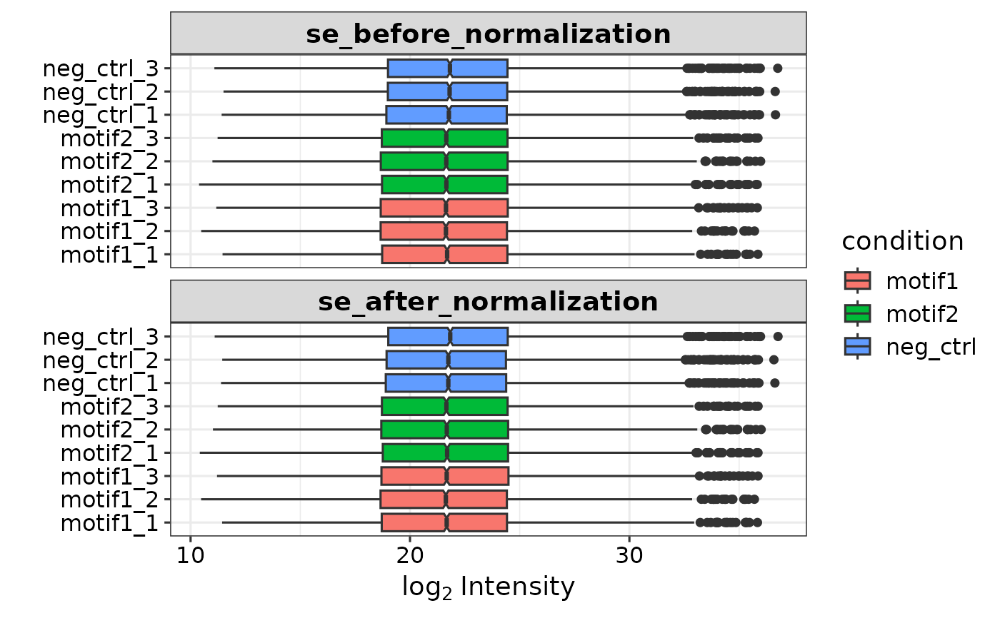

Perform differential protein expression analysis
Usage
get_DEPresults(
se,
condition1 = NULL,
condition2 = NULL,
ref_condition = NULL,
tests = NULL,
alpha = 0.05,
lfc = 1,
type = "manual",
fdr_type = "BH",
missing_thr = NA
)Arguments
- se
SummarizedExperiment object with protein expression data.
- condition1
One of the conditions to be tested present in expDesign.
- condition2
One of the conditions to be tested present in expDesign.
- ref_condition
One of the conditions in expDesign that is used as reference. Must be used in combination with type = 'control'.
- tests
Character vector specifying which contrasts to test when using "type = 'manual'"
- alpha
the p.adjust significance cutoff.
- lfc
The log2 fold change significance cutoff.
- type
Type of comparison to be made. Options are: 'manual', 'control', and 'all'.
- fdr_type
Type of fdr correction. Options are 'fdrtool' and 'BH' (Benjamini-Hochberg). Default is 'BH'
- missing_thr
Optional numeric value. Checks if one of the two conditions in 1-vs-1 comparisons has enough values. Adds '_overimpute' column to output.
Examples
se <- prepare_se(report.pg_matrix, expDesign)

#> Imputing along margin 2 (samples/columns).
#> [1] 0.3058978
#> Imputing along margin 1 (features/rows).
#> Warning: 36 rows with more than 50 % entries missing;
#> mean imputation used for these rows
#> Cluster size 5511 broken into 3577 1934
#> Cluster size 3577 broken into 2319 1258
#> Cluster size 2319 broken into 3 2316
#> Done cluster 3
#> Cluster size 2316 broken into 1144 1172
#> Done cluster 1144
#> Done cluster 1172
#> Done cluster 2316
#> Done cluster 2319
#> Done cluster 1258
#> Done cluster 3577
#> Cluster size 1934 broken into 1298 636
#> Done cluster 1298
#> Done cluster 636
#> Done cluster 1934
res <- get_DEPresults(se, 'motif1', 'neg_ctrl', type = 'manual')
#> Tested contrasts: motif1_vs_neg_ctrl